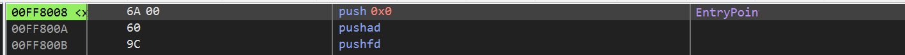
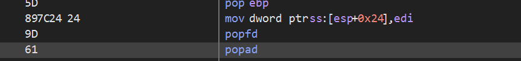
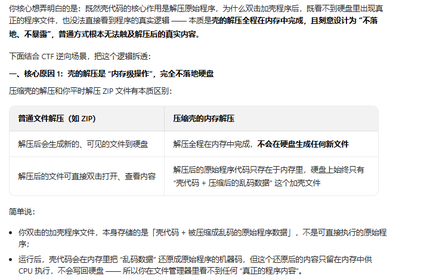
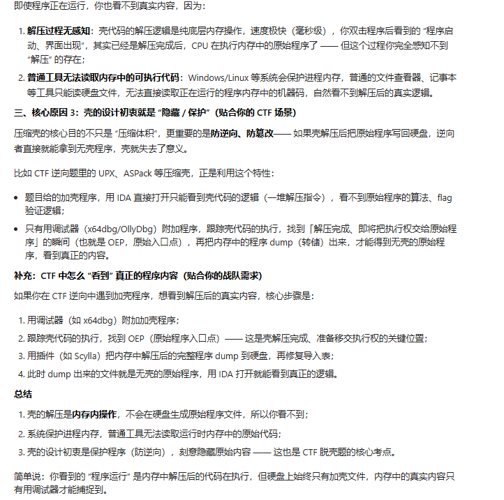
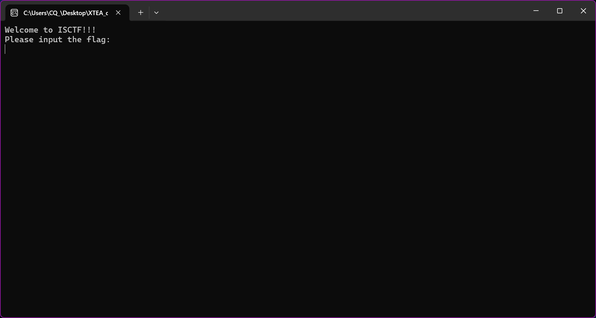

壳
保护软件不被非法修改或者反编译的工具 分为两类 压缩壳 和 加密壳
压缩壳
通俗的说 就是把程序变小 减小体积，使用压缩算法（类似于 zip） 便于保存，常见的压缩壳就是 UPX。
加密壳
又被称为保护壳 用于各种防止代码逆向分析的技术 前面看到的 反调试 SMC 或者虚拟机检测 VM混淆 什么什么都算
对于这道题脱壳的话 出题小姐姐说只需要认识 ESP 定律、常用的 Scylla 修复工具
加密壳的话如果想要脱需要写 IAT 修复脚本 eg: OD 的 script、x64dbg 的 script
XTEA 讲解

这边就直接加入的入口断点处 入口断点下面两行出现了
00FF8008 <x | 6A 00 | push 0x0 |
00FF800A | 60 | PUSHAD |
00FF800B | 9C | PUSHFD |PUSHAD 就是将我们dbg 调试器中 目前通用寄存器的值全部压入栈中 用于保存
PUSHFD 就是将 标志寄存器压入栈上
一般来说PUSHAD 和 PUSHFD放在一起使用俗称为保存现场 or 保存环境

这里的POPFD和POPAD 原理也就很清楚了
而这两个的目的显而易见 就是用来恢复我们前面通过push所保存的环境
为什么压缩壳需要这样呢?
在我们解压的时候，可能会调用到API，为了避免寄存器的值被更改·所以需要保存环境， 这样的话，当我们真正跳转到程序的入口点也就是OEP时，它就可以提前恢复环境，保存现场
找OEP
OEP：被保护的程序的入口点
一般的方法就是单步跟踪法，ESP 定律、SFX（OD 自带的OEP寻找功能）
ESP 定律
原理: 程序中的堆栈平衡快速找到OEP
ESP 定律是指：对压缩壳程序，在调试器中对ESP寄存器的当前值下 “硬件访问断点”，程序运行后会直接断在壳解压完成、即将跳转到原始程序入口点（OEP）的位置。
在 x86/x64 架构中，ESP（栈指针寄存器）的核心作用是指向当前栈顶的内存地址，所有函数调用、数据压栈都依赖它。
栈平衡
栈平衡：一段代码执行完后，装进去的子弹数 = 取出来的子弹数 → 弹夹托回到最初位置（ESP值和代码执行前一致）；
这也是 ESP 定律能生效的底层原因：壳解压完成后必须让 ESP 回到初始值（栈平衡），才能让原始程序正常运行，而 “硬件断点监控 ESP 访问” 恰好能捕捉到这个平衡后的瞬间
个人思考过程
为什么壳代码的任务是解压程序，但我们运行程序时壳执行了壳代码我们却看不到真正的程序内容
这里涉及一些硬件的原理。


为什么在 PUSHAD 的 ESP 地址上下硬件断点
前面我们知道保存和恢复环境是栈平衡，所以在push之前的初始环境中我们的栈顶和恢复环境后的栈顶地址是一样的，而这个栈顶的地址会在pop完以后直接跳转到程序真正的OEP。而程序正常的顺序就是解压完成恢复环境以后直接跳转到OEP,而硬件断点就
这里遇到一些问题
一、x64dbg 打开程序时，调试器已经存在四个断点，这些断点是怎么来的呢
1.x64dbg 默认配置为在程序加载的特定阶段自动暂停，以便你可以在程序运行前进行分析。
- 系统断点 (System Breakpoint): 当程序刚刚被加载到内存，但还没有执行任何一行自身代码时（通常是在
ntdll.dll加载时），调试器会暂停。这是为了防止程序在进入主函数前运行 TLS 回调函数或反调试代码。- 入口断点 (Entry Breakpoint / OEP): 调试器会在程序的入口点（Original Entry Point）暂停，这通常是主程序的起点。
如何修改： 如果你不想让它自动停在这里：
- 点击菜单栏的 选项 (Options) -> 设置 (Preferences)。
- 切换到 事件 (Events) 选项卡。
- 取消勾选 系统断点 (System Breakpoint) 或 入口断点 (Entry Breakpoint)。
- 建议： 至少保留“入口断点”，否则程序可能一闪而过直接运行结束。
2. 自动恢复上次的调试记录 (数据库)
x64dbg 拥有强大的“自动保存”功能。它会根据被调试程序的哈希值（Hash）或文件路径来保存你的调试数据。
如果你以前调试过这个程序（或者同名的程序），并且当时设置了断点，x64dbg 会在加载程序时自动从数据库中恢复这些断点。
- 现象： 你会在反汇编窗口看到红色的断点圆点，且这些位置不是系统默认的，而是你以前可能感兴趣的地方。
- 如何清除：
- 在 断点 (Breakpoints) 选项卡中，右键点击 -> 删除所有 (Delete All)。
- 或者，如果你想彻底重置该程序的调试信息，可以去 x64dbg 目录下的
db文件夹中，删除对应的.dd32或.dd64文件。3. 程序硬编码断点 (Int 3)
某些程序（特别是被加壳的程序、恶意软件或开发版软件）在代码内部直接写入了中断指令。
- 指令：
INT 3(机器码0xCC)。- 原因：
- 反调试： 程序故意触发异常来检测是否被调试器挂接。
- 开发遗留： 程序员在开发时忘记删除的断点。
- 表现： 调试器显示“异常”或“陷阱”，并停在你不认识的代码位置。
二、断点访问
在 x64dbg（以及所有基于 x86/x64 CPU 的调试器）中，硬件断点利用的是 CPU 内部的调试寄存器
选择“2字节”还是“4字节”的核心区别在于监控内存范围的大小和触发的灵敏度。
简单来说：字节数越大，监控的范围越宽，越容易被触发；字节数越小，监控越精准。
以下是详细的区别分析：
1. 监控范围 (Scope)
这是最直观的区别。硬件断点是基于“范围”触发的，而不仅仅是起始地址。
假设你在内存地址
0x1000处设置硬件访问断点：
- 2字节 (Word): 监控范围是
0x1000到0x1001(共2个字节)。- 4字节 (Dword): 监控范围是
0x1000到0x1003(共4个字节)。这个例子我很喜欢有利于理解
没关系，我们换个更直观的方式，用**“埋地雷”或者“铺地毯”**的比喻来理解。
忘记那些复杂的十六进制，把内存想象成一排排的地板砖。每一块砖都有一个编号。
假设你把断点设置在 0号 地板砖上。
- 2字节断点： 相当于你在 0号 和 1号 这两块砖上铺了一张小地毯（监控范围小）。
- 4字节断点： 相当于你在 0号、1号、2号、3号 这四块砖上铺了一张大地毯（监控范围大）。
规则很简单：只要有人踩到了地毯的任何一个角落，炸弹（断点）就会爆炸。
Dump
Scylla
很经典的脱壳修复工具（IAT 修复工具）
当你把一个加壳的程序在调试器（如 x64dbg）中跑到了OEP（原始入口点）后，你需要把程序从内存里“抓”出来（Dump），并修复它的导入表（IAT），这样抓出来的程序才能脱离调试器正常运行。
IAT
IAT 全称是 Import Address Table（导入地址表）。
它是 Windows 程序（PE 文件）中最核心、最关键的数据结构之一。如果不理解 IAT，就无法理解脱壳、API Hook 或病毒分析。
通俗比喻：空白的通讯录
假设你是一个老板（主程序
.exe），你要给你的合作伙伴“顺丰小哥”（外部函数，比如MessageBox）打个电话。
- 编译时（程序还没运行）： 你知道你要找“顺丰小哥”，但你不知道他今天的电话号码是多少（因为他在不同地区、不同时间，电话可能会变）。 所以，你在你的通讯录上留了一行空白：
联系人：顺丰小哥 电话：[ 这里是空的，等填 ]
- 运行时（程序启动瞬间）： 操作系统（Windows 加载器）就像你的秘书。当你上班（程序启动）时，秘书会先做一件事：
- 去查现在的电话黄页（加载 DLL）。
- 找到“顺丰小哥”今天的确切号码（比如
138-xxxx）。- 把这个号码填入你通讯录的那行空白里。
- 打电话（调用函数）： 当你要发货时，你不需要知道号码，你只需要拿出通讯录，拨打那个格子里填写的号码就行了。
这个“填满了确切电话号码的通讯录”，就是 IAT。
2. 技术原理
在计算机中，程序为了节省体积和复用代码，不会把所有功能（比如弹窗、读写文件）都写在自己身上，而是去调用 Windows 自带的 DLL（动态链接库）。
- 动态地址问题：
kernel32.dll或user32.dll在内存中的位置不是固定的（由于 ASLR 技术和不同系统版本）。MessageBox函数在这个电脑上可能是0x77123456，在另一台电脑上可能是0x76543210。- IAT 的作用： 编译器在生成
.exe时，会在文件里预留一块区域（IAT）。 当程序启动时，Windows 加载器（PE Loader）会遍历程序需要调用的所有函数，找到它们在当前内存中的真实地址，然后一个个填入 IAT 中。- 程序的调用方式： 程序代码里执行的指令通常是：
CALL [0x402000]这里[0x402000]就是 IAT 中的一项。程序去读取0x402000里的内容（比如0x77123456），然后跳转过去执行。
3. 为什么你刚才用的 Scylla 要“修复 IAT”？
加壳软件（Packer） 为了保护程序不被破解，通常会做两件坏事：
- 加密/破坏原始 IAT： 它不让 Windows 系统直接填写真实的函数地址，而是填入壳自己的代码地址。这样程序调用函数时，会先跳到壳的代码里转一圈（反调试、解密），再跳去真正的函数。
- “偷吃”指令： 有些猛壳甚至会把 IAT 彻底抹去，自己模拟一个加载过程。
当你脱壳时： 你在内存中抓取（Dump）下来的程序，里面保留的是当时的、临时的内存地址。 如果不修复 IAT：
- 问题1： 那个临时地址（如
0x77123456）下次重启电脑就失效了。- 问题2： 如果壳修改了 IAT，抓下来的程序里填的是“壳的地址”，但你已经把壳脱掉了，那些地址就指向了虚无，程序一运行就崩溃。
Scylla 的工作： 它的
Get Imports（获取导入）功能，就是去内存里把被壳弄乱的 IAT 梳理一遍，找到所有函数真正的名字（比如MessageBoxA），然后在生成的脱壳文件里，重新建立一个标准的、干净的 IAT。这样，脱壳后的程序在任何电脑上运行时，Windows 都能认出它需要什么函数，并正确填入地址。
CFF Explorer （小辣椒）
如果在脱壳流程中，x64dbg 是“手术台”，Scylla 是“缝合神经（IAT）的医生”，那么 CFF Explorer 就是“整形医生”。
它的主要作用是：修复和调整脱壳后的文件结构，让它看起来更像一个正常的程序，从而能被 Windows 正常运行。
小辣椒重定义这里接触的是文件头部和可选头部
1. 文件头部 (File Header)
—— 就像是包裹外面的“物流标签”
这一部分主要告诉 Windows 系统：“这是一箱什么东西？有多少个零件？”
- 它的作用： 它记录了文件最基本的物理属性。Windows 在还没开始加载程序代码之前，先读这里，看看能不能处理这个文件。
- 你截图里的关键信息：
- Machine (机器):
Intel 386。这告诉系统：“我是给 32 位电脑用的，64 位系统要用兼容模式运行我。” - NumberOfSections (节/区段数量):
0003。意思是：“这个程序拆成了 3 部分（比如代码部分、数据部分、资源部分）。” - Characteristics (特征):
0102。这就是你刚才弹窗修改的地方。它标记着：“我是个 EXE（不是 DLL）”、“我的重定位信息被剥离了（别给我搬家）”。
结合你刚才的操作：
- 在“文件头部”里：你勾选了“剥离重定位信息”。
- 潜台词： 你修改了物流标签，把“可以任意搬家”改成了“必须住在指定地址，严禁搬家”。
- 在“可选头部”里：你可能会检查基址（ImageBase）或入口点（EntryPoint）。
- 潜台词： 你要确保说明书里的“地基位置”和你刚才在“文件头部”里锁死的地址是匹配的，否则程序一运行就找不到北了。
一句话区分：
- 文件头部 = 物理属性（是什么）
- 可选头部 = 逻辑属性（怎么跑）
到此我们的压缩壳就脱掉了
